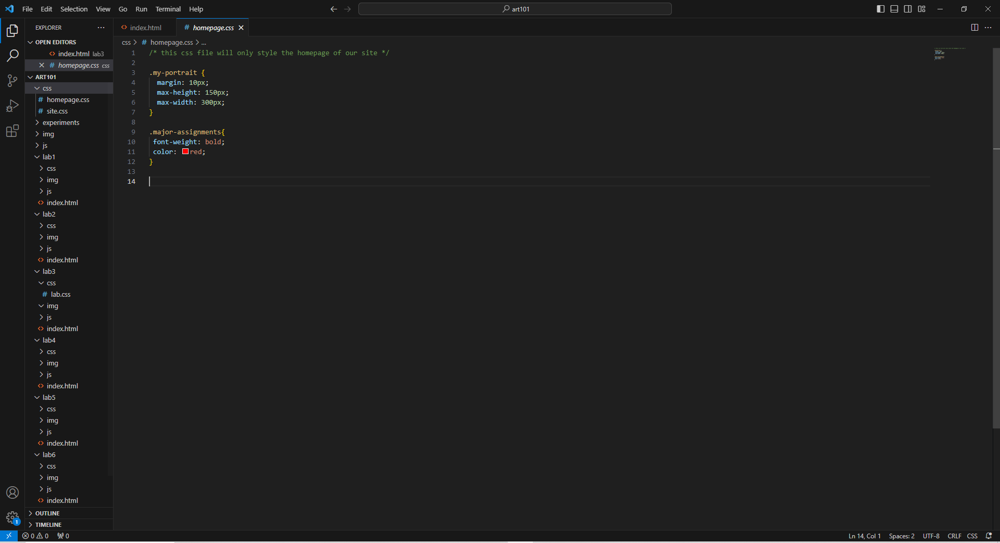
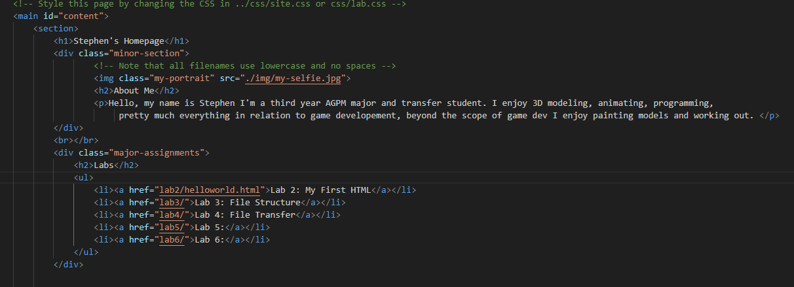
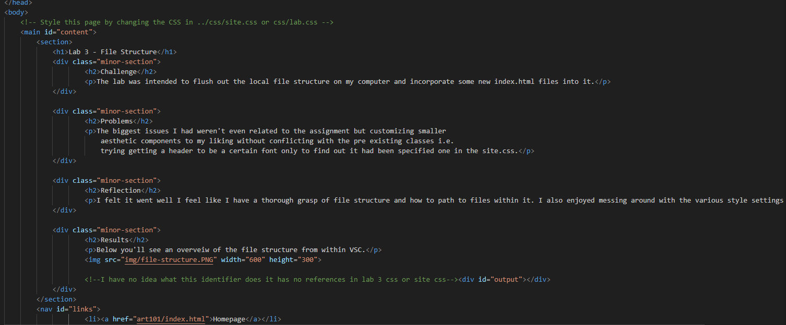

Lab 3 - File Structure
Challenge
The lab was intended to flush out the local file structure on my computer and incorporate some new index.html files into it.
Problems
The biggest issues I had weren't even related to the assignment but customizing smaller aesthetic components to my liking without conflicting with the pre existing classes i.e. trying getting a header to be a certain font only to find out it had been specified one in the site.css.
Reflection
I felt it went well I feel like I have a thorough grasp of file structure and how to path to files within it. I also enjoyed messing around with the various style settings within the css.
Results
Below you'll see an overveiw of the file structure from within VSC.
This is look at my homepage html.
This is look at my lab 3 html.
